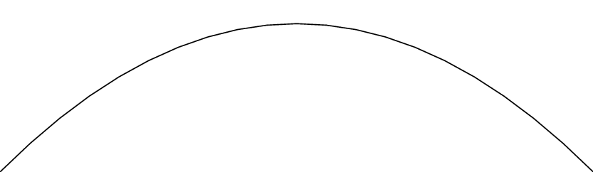
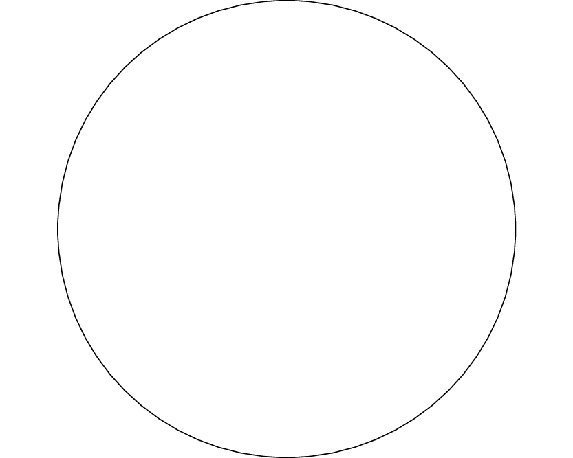

Alternate Generations of the Koch Curve
By the Iterated Function System Theorem, the initial compact set E does not matter. In the three animations below, the set E is, respectively, a line, a parabolic arc, and a circle. After a few iterations of the construction, the sets are indistibguishable!


